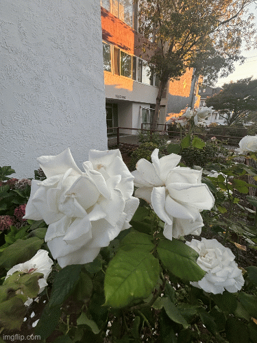

Part 1 — Selfie: The Wrong Way vs. The Right Way


The left image shows the close up, distorted selfie. This perspective makes my facial features look disproportional. The right image is much more appealing, taken from further back and zoomed in.
Part 2 — Architectural Perspective Compression


The image on the left is taken from up close. The depth of the features in the building are captured better here. The image on the right, taken from further back and zoomed in, appears more flattened.
Part 3 — The Dolly Zoom

Here is my dolly zoom of some pretty flowers!